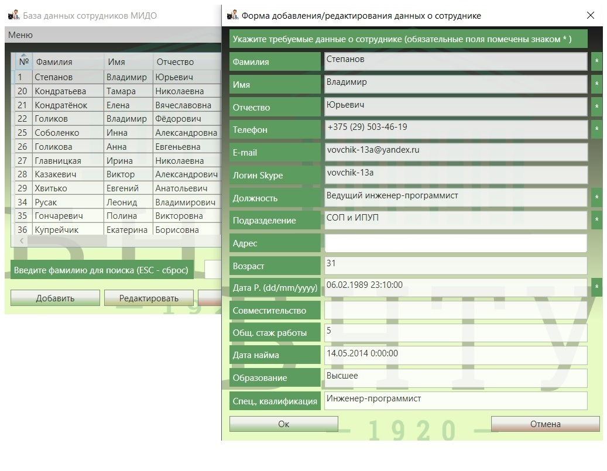

База данных и приложение для работы с БД сотрудников (IIDE_employees)

Программа предназначена для сбора, хранения и модификации данных о сотрудниках Международного института дистанционного образования. Основными возможностями являются: настойка опций подключения к базе данных, возможность переподключения к БД при сбоях в работе ЛВС, внесение и редактирование данных, поиск в БД по фамилии сотрудника, фильтрация отображения данных из БД по подразделению и др.
Программа для рассылки писем (IIDE_email_sender)

Программа предназначена для отправки электронных сообщений в определённом формате (с использованием почтового сервера БНТУ) – личного обращения по имени и отчеству (с учётом пола получателя) и возможностью прикрепления файлов, как в стандартных почтовых клиентах. Отличительной особенностью является возможность множественного выбора получателей одновременно из заранее сформированных текстовых баз данных, где содержатся: e-mail получателя, имя и отчество, организация, подразделение и пол получателя. Также существует возможность отправки сообщений не всем получателям из БД, а только относящимся к определённой организации и/или подразделению.
Программа для составления расписания занятий в сессионный период (IIDE_Timetable)


Программа предназначена для составления расписания занятий: лабораторно-экзаменационных и зачётных сессий студентов первой и второй ступеней получения высшего образования в виде унифицированной структуры (современном, используемом для сохранения и передачи информации, формате «json»), не зависящей от объёма данных расписания и с использованием которой (после парсинга) будет возможно восстановить первоначальный вид расписания на требуемом устройстве или требуемом контексте. Основными возможностями являются: создание нового расписания, его сохранение и загрузка, экспорт в табличном виде (для последующего вывода на печать), возможность экспорта данных о расписании для размещения на страницах сайта в табличном виде с интерактивными элементами. Приложение обладает широкими возможностями настройки данных об утверждающем проректоре, должностях и ФИО лиц, ответственных за подпись расписания, наименования учебного заведения и т.д., а также (на закладке «Настройки приложения») есть возможность изменять внешнее цветовое оформление представления объединённых ячеек.
Сайт Международного учебного центра БНТУ в Шри-Ланке
Четырёхстраничный информационный сайт с информацией об American International Campus – AIC Campus, и информацией о Международном образовательном центре БНТУ в Шри-Ланке, включающей информацию об образовательном процессе. Вся информация представлена на английском языке.
Также отдел имеет ряд разработок, в числе которых:
- скриптовые решения вычисления номера учебной недели;
- скриптовые решения информирования о графике сессий по курсам;
- скриптовые решения для диагностики доступности отдельных ресурсов университета;
- модифицированные шаблоны экспорта данных из внутренних БД для формирования отчётности;
- конфигурационные файлы для настройки ОС семейства Windows, предназначенные для повышения защищённости узлов, связанных при помощи ЛВС и другие.